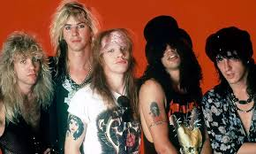

Biografía
Guns N’ Roses es una banda de hard rock formada en Los Ángeles, EE. UU., en 1985 por Axl Rose, Slash, Izzy Stradlin, Duff McKagan y Steven Adler. Su debut, Appetite for Destruction (1987), explotó internacionalmente con himnos como “Sweet Child O’ Mine”, “Welcome to the Jungle” y “Paradise City”. En 1991 lanzaron Use Your Illusion I & II, ampliando su sonido. Tras décadas de cambios en la formación, Axl Rose permaneció al frente; en 2016 se produjo la reunión parcial con Slash y Duff, revitalizando a la banda y sus giras.
Información detallada
- Origen: Sídney, Australia
- Año de formación: 1973
- Género: Hard Rock / Rock and Roll
- Fundadores: Angus Young y Malcolm Young
- Vocalistas principales: Bon Scott (1974–1980), Brian Johnson (1980–presente)
- Integrantes destacados: Angus Young, Malcolm Young, Brian Johnson, Cliff Williams, Phil Rudd
- Álbumes icónicos: High Voltage (1976), Highway to Hell (1979), Back in Black (1980), The Razors Edge (1990)
- Logros: Más de 200 millones de discos vendidos en todo el mundo
- Estilo musical: Guitarras potentes, ritmo constante y letras directas que reflejan la esencia del rock clásico
